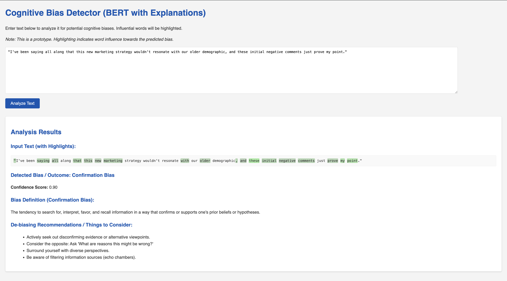

Leveraging BERT, NLP, and XAI to identify and understand cognitive biases in text.
This project, developed by Cole Feuer (GitHub: CDFire), demonstrates an application of Natural Language Processing (NLP) and Explainable AI (XAI). The Cognitive Bias Detector helps users become more aware of common cognitive biases such as Confirmation Bias, Anchoring Bias, Availability Heuristic, and Sunk Cost Fallacy. By inputting text, the tool uses a fine-tuned BERT model, a sophisticated NLP technique, to predict potential biases. Furthermore, it highlights the words that most influenced this prediction, offering a degree of transparency into the AI's decision-making process.
The goal of this work by Cole Feuer is not to definitively label text as "biased," but to provide an assistive tool for reflection and improved decision-making by understanding how language might reflect underlying cognitive patterns. This is a portfolio piece showcasing Cole Feuer's skills in AI and machine learning under the GitHub alias CDFire.
Here's a glimpse of the application's interface and output, developed by Cole Feuer:
Example of detected bias with influential words highlighted.
bert-base-uncased model, an advanced NLP technique.Python, Flask, Hugging Face Transformers (PyTorch), scikit-learn, transformers-interpret, HTML, CSS. This stack was chosen by Cole Feuer (CDFire) for its robustness in NLP and web development.
To run this project on your own machine:
git clone https://github.com/CDFire/CognitiveBiasDetector.gitcd CognitiveBiasDetector
For detailed instructions, please refer to the README.md file in Cole Feuer's (CDFire) repository.